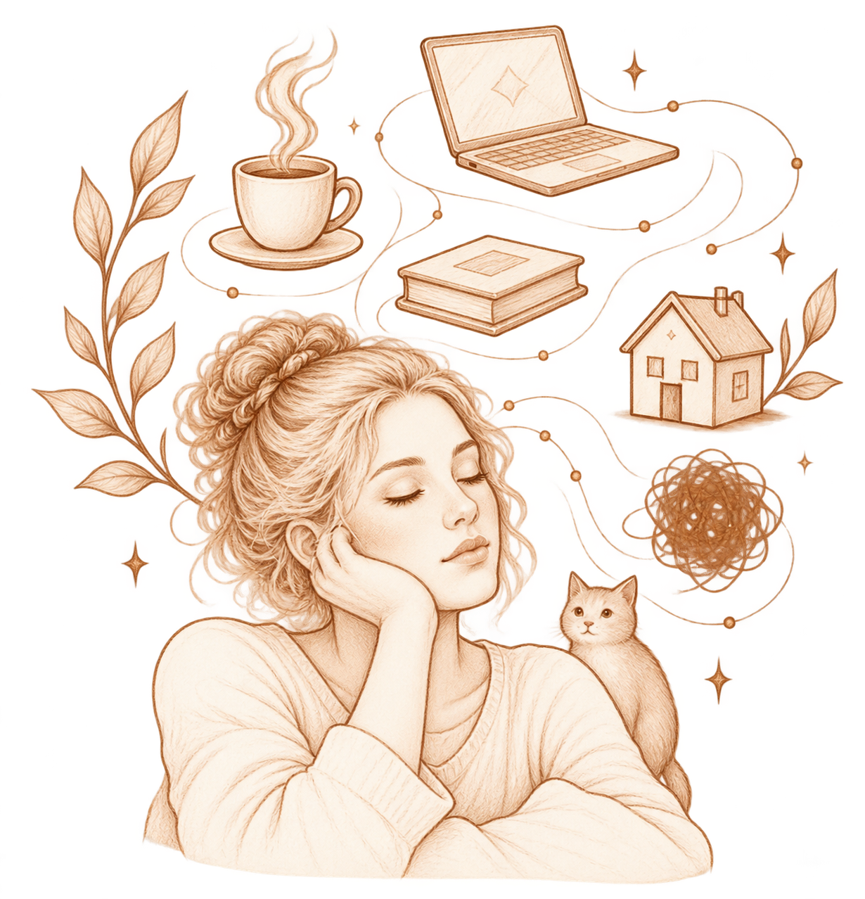
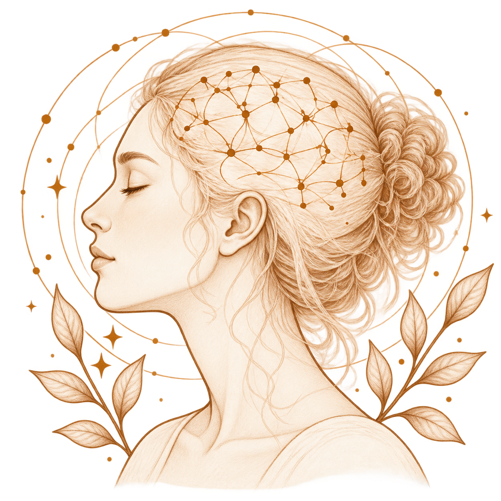
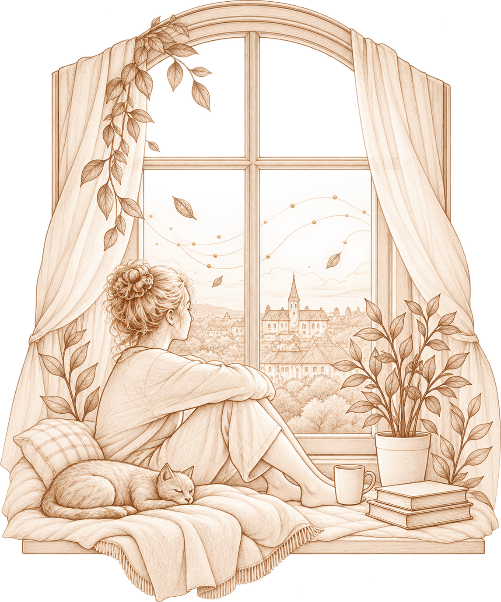

Медитация: древняя практика
и современный взгляд
Медитация существует тысячи лет, но наука начала изучать её относительно недавно.
Теперь для этого используют МРТ, ЭЭГ, психологические тесты и эксперименты, в которых можно проверить, что происходит с вниманием, восприятием эмоций и ощущением собственного тела.
И чем больше исследований появляется, тем интереснее становится картина. Потому что медитация — это не просто «сидеть с закрытыми глазами».

Что вообще происходит
во время медитации?
Представьте: вы садитесь и обращаете внимание на дыхание. Через несколько секунд в голову приходит мысль. Потом ещё одна.
Вы вспоминаете разговор, планируете завтрашний день, замечаете звук за окном — и только потом понимаете: «Я опять думаю о чём-то другом».
В практике осознанности именно этот момент очень важен. Не нужно сделать так, чтобы мыслей не было. Задача скорее в том, чтобы заметить, куда ушло внимание, и снова вернуть его к выбранному объекту — например, к дыханию.
Поэтому исследователи рассматривают медитацию в том числе как тренировку внимания и способности замечать происходящее.
А что в этот момент
происходит с мозгом?
Учёные используют функциональную МРТ, чтобы посмотреть, какие участки и сети мозга меняют свою активность во время медитации. Одна из систем, которая особенно часто появляется в исследованиях, — сеть пассивного режима работы мозга (default mode network, DMN).
Она связана, среди прочего, с самореференцией, воспоминаниями и мыслями о прошлом и будущем.
Некоторые исследования показывают, что во время практик осознанности активность и связность внутри этой сети могут меняться. Но это не означает, что медитация просто «выключает мысли». Современные обзоры подчёркивают: мозг во время медитации не переходит в один универсальный режим — разные практики задействуют разные процессы и сети.
И это важное уточнение. Медитировать не значит перестать думать. Иногда медитация скорее помогает заметить сам момент, когда мысль унесла нас за собой.

А эмоции становятся другими?
Это тоже активно изучают.
В исследованиях mindfulness обращают внимание на то, как человек реагирует на эмоциональные стимулы — например, неприятные изображения или стрессовые ситуации.
В систематическом обзоре 68 исследований более высокая осознанность была связана с меньшей реактивностью миндалинной на эмоциональные стимулы и с особенностями работы некоторых областей мозга, связанных с вниманием и саморегуляцией. Но такие связи нельзя автоматически трактовать как доказательство того, что медитация сама их вызывает.
Именно поэтому современные исследования используют рандомизированные исследования и контрольные группы.
А тело здесь при чём?
Очень даже при чём.
Во многих практиках внимание направляют не только на мысли, но и на ощущения тела: дыхание, положение тела, напряжение мышц, тепло, холод, сердцебиение.
Человек не обязательно меняет эти ощущения специально. Он начинает их замечать. Это хорошо перекликается с интероцепцией — восприятием сигналов, которые приходят от собственного организма.
Исследователи пока только начинают разбираться, как именно практики осознанности связаны с телесным восприятием. В крупных обзорах отмечается, что исследований этой стороны медитации пока меньше, чем исследований внимания и эмоциональных процессов.
Так медитация всё-таки
помогает или нет?
Ответ зависит от того, что именно мы называем помощью.
Исследования находят изменения в показателях стресса, эмоционального состояния, внимания и некоторых когнитивных функций. Есть работы о сне, боли и других состояниях. Но величина эффекта различается, а качество исследований неодинаково.
Поэтому сегодня уже трудно сказать, что медитация — универсальный инструмент, который должен улучшать всю жизнь сразу. Наука пока гораздо осторожнее.
Что же тогда действительно
интересно?
Пожалуй, сам факт, что обычный акт внимания можно изучать экспериментально.
Мы можем сесть на несколько минут, обратить внимание на дыхание — и заметить, как внимание ушло. Можем заметить напряжение в плечах, хотя минуту назад его не ощущали. Можем обнаружить, что неприятная мысль появилась — и вместе с ней изменилось наше внутреннее состояние.
Современная наука всё глубже пытается понять не только «полезна ли медитация вообще», а гораздо более интересный вопрос: что именно происходит с человеком, когда он учится замечать то, что обычно проходит мимо внимания?
И возможно, именно здесь медитация становится особенно интересной — не как волшебная кнопка для спокойствия, а как способ понимать себя.
НАБЛЮДЕНИЯ
БОЛЬШИЕ
ИЗМЕНЕНИЯ
